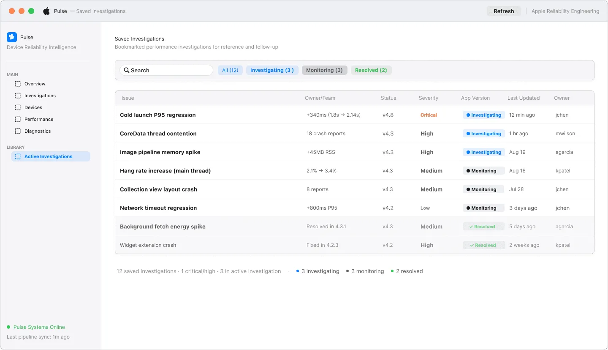

Selected work
One shipped · two conceptsRetailPilot — a decision inbox for retail stock
Store owners were reading six dashboards to answer one question. I turned every stock problem into a single card and cut reorder decisions from 30 minutes to 3. Then I built it and put it in front of real people.
 Read the case study →
Read the case study →
Trip Confidence — can I make this trip?
EV riders don't want a battery percentage, they want a yes or a no. A trip check that weighs distance, terrain, traffic and riding style, and answers with one verdict and one action.
 Read the case study →
Read the case study →
Pulse — MetricKit data you can act on
Performance tools report metrics and then guess at causes. A workspace built around the regression itself that collapses seven sources of context into one, and says honestly how sure it is.

Read the case study → Framer design to live site
Framer design to live site Lovable fast prototypes
Lovable fast prototypes Cursor closer to the code
Cursor closer to the code Antigravity agent-first building
Antigravity agent-first building